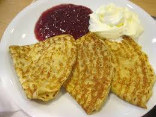
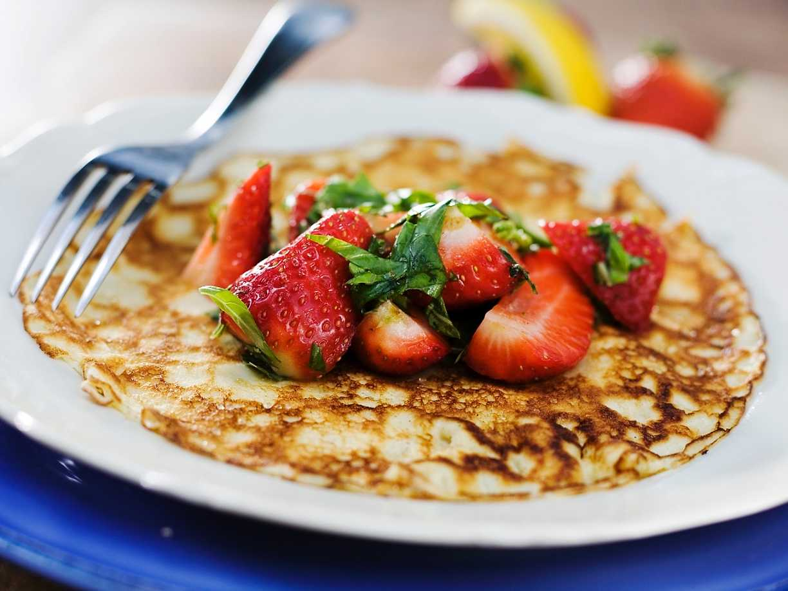

Ingredienser
För 4 portioner
- 2 1/2 vetemjöl
- 1/2 tsk
- 6 dl mjölk
- 3 ägg
- smör (till stekning)
- sylt, bär eller frukt till servering
Så här gör du
- Blanda mjöl och salt i en bunke
- Vispa i hälften av mjölken och vispa till en slät smet.
- Vispa i resten av mjölken och äggen.
- låt smeten vila ca 10 minuter.
- Srek tunna pannkaor i lite smör, för varje pannkaka i en stek-eller pannkakspanna.
- Servera med sylt, bär eller frukt.
Serveringsförslag

